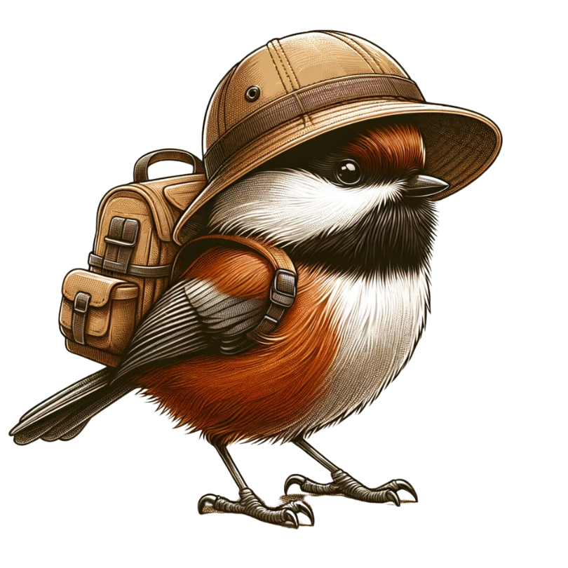
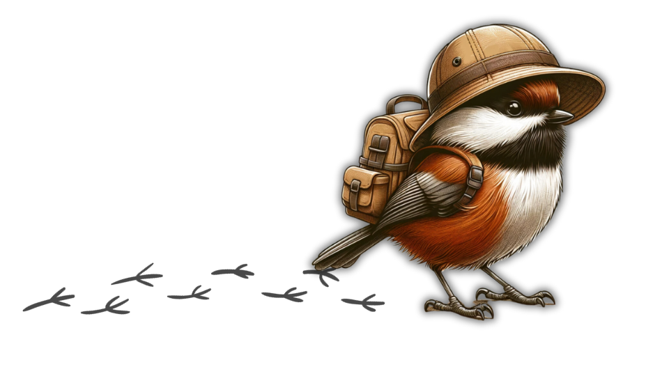

Birds who commonly visit my window feeder:
- Chesnut-backed Chikadee. Learn more about them here.
- House Sparrow. Learn more about them here.
- House Finch. Learn more about them here.
- Townsend Warbler. Learn more about them here.
- White-crowned Sparrow. Learn more about them here.

